승강기기사 (2020-09-26 기출문제)
1과목: 승강기 개론
1. 엘리베이터의 매다는 장치와 매다는 장치 끝부분 사이의 연결은 매다는 장치의 최소 파단하중의 최소 몇 % 이상을 견딜 수 있어야 하는가?
- 70
- 80
- 90
- 100
(정답률: 70%)

2. 에스컬레이터의 과속역행방지장치의 종류가 아닌 것은?
- 폴 래칫 휠 방식
- 디스크 웨지 방식
- 디스크 브레이크 방식
- 다이나믹 브레이크 방식
(정답률: 64%)
3. 호출버튼·조작반·통화장치 등 승강기의 안팎에 설치되는 모든 스위치의 높이 기준은? (단, 스위치 수가 많아 기준 높이 이내로 설치되는 것이 곤란한 경우는 제외한다.)
- 바닥면으로부터 0.8m 이상 1.2m 이하
- 바닥면으로부터 0.9m 이상 1.3m 이하
- 바닥면으로부터 1.0m 이상 1.4m 이하
- 바닥면으로부터 1.2m 이상 1.5m 이하
(정답률: 71%)
4. 유압식 승강기에서 미터인 회로를 사용하는 유압회로의 특징으로 맞는 것은?
- 유량을 간접적으로 제어하므로 정확한 제어가 어렵다.
- 유량제어밸브를 주회로에서 분기된 바이패스회로에 삽입한 것으로 효율이 높다.
- 릴리프밸브로 유량을 방출하지 않으므로 설정압력까지 오르지 않고 부하에 의해 압력이 결정된다.
- 카를 기동할 때 유량 조정이 어렵고, 기동 쇼크가 발생하기 쉬우며, 상승 운전 시의 효율이 좋지 않다.
(정답률: 57%)
5. 엘리베이터를 동력매체별로 구분한 것이 아닌 것은?
- 로프식 엘리베이터
- 유압식 엘리베이터
- 스크루식 엘리베이터
- 더블테크 엘리베이터
(정답률: 74%)
6. 엘리베이터 승강로에 모든 출입문이 닫혔을 때 밝히기 위한 승강로 전 구간에 걸쳐 영구적으로 설치되는 전기조명의 조도 기준으로 틀린 것은?
- 카 지붕과 피트를 제외한 장소 : 20 lx
- 카 지붕에서 수직 위로 1m 떨어진 곳 : 50 lx
- 사람이 서 있을 수 있는 공간의 바닥에서 수직 위로 1m 떨어진 곳 : 50 lx
- 작업구역 및 작업구역 간 이동 공간의 바닥에서 수직 위로 1m 떨어진 곳 : 80 lx
(정답률: 71%)
7. 직접식 유압 엘리베이터의 특징이 아닌 것은?
- 부하에 의한 카 바닥의 빠짐이 작다.
- 추락방지안전장치(비상정지장치)가 필요하지 않다.
- 일반적으로 실린더의 점검이 간접식에 비해 쉽다.
- 실린더를 설치하기 위한 보호관을 지중에 설치하여야 한다.
(정답률: 67%)
8. 과속 또는 매다는 장치가 파단할 경우 카나 균형추의 자유낙하를 방지하는 장치는?
- 완충기
- 브레이크
- 차단밸브
- 추락방지안전장치(비상정지장치)
(정답률: 72%)
9. 엘리베이터의 카에는 자동으로 재충전되는 비상전원공급장치에 의해 5 lx 이상의 조도로 얼마 동안 전원이 공급되는 비상등이 있어야 하는가?
- 30분
- 40분
- 50분
- 60분
(정답률: 80%)
10. 주택용 엘리베이터에 대한 기준 중 ( ) 안에 들어갈 내용으로 맞는 것은?
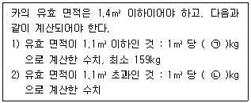
- ㉠ 179, ㉡ 3⑤
- ㉠ 195, ㉡ 295
- ㉠ 179, ㉡ 300
- ㉠ 195, ㉡ 3⑤
(정답률: 57%)
11. 에스컬레이터의 안전장치가 아닌 것은?
- 오일 완충기
- 스커트 가드
- 핸드레일 안전장치
- 인레트(Inlet) 스위치
(정답률: 70%)
12. 균형추의 총중량은 빈 카의 자중에 그 엘리베이터의 사용 용도에 따라 적재하중의 35~55%의 중량을 더한 값으로 한다. 이때 적재하중의 몇 %를 더할 것인가를 나타내는 것은?
- 마찰률
- 트랙션 비율
- 균형추 비율
- 오버 밸런스율
(정답률: 79%)
13. 엘리베이터의 자동 동력 작동식 문에 대한 기준 중 ( ) 안에 들어갈 내용으로 알맞은 것은?
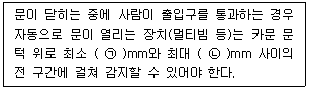
- ㉠ 25, ㉡ 1400
- ㉠ 30, ㉡ 1500
- ㉠ 25, ㉡ 1600
- ㉠ 30, ㉡ 1600
(정답률: 60%)
14. 에스컬레이터 또는 무빙워크의 스커트가 디딤판(스텝) 측면에 위치한 경우 수평 틈새는 각 측면에서 최대 몇 mm 이하이어야 하는가?
- 3
- 4
- 5
- 6
(정답률: 63%)
15. 주차장법령상 주차구획이 3층 이상으로 배치되어 있고 출입구가 있는 층의 모든 주차구획을 주차장치 출입구로 사용할 수 있는 구조로서 그 주차구획을 아래·위 또는 수평으로 이동하여 자동차를 주차하는 주차장치는?
- 2단식 주차장치
- 다단식 주차장치
- 수평이동식 주차장치
- 수직순환식 주차장치
(정답률: 54%)
16. 일반적으로 교류이단 속도제어에서 가장 많이 사용되는 이단속도 전동기의 속도비는?
- 8 : 1
- 6 : 1
- 4 : 1
- 2 : 1
(정답률: 75%)
17. 엘리베이터용 전동기의 구비 조건이 아닌 것은?
- 소음이 적을 것
- 기동토크기 클 것
- 기동전류가 적을 것
- 회전속도가 느릴 것
(정답률: 68%)
18. 엘리베이터 카의 상승과속방지장치에 대한 설명으로 틀린 것은?
- 이 장치가 작동되면 기준에 적합한 전기안전장치가 작동되어야 한다.
- 이 장치는 빈 카의 감속도가 정지단계 동안 1gn를 초과하는 것을 허용하지 않아야 한다.
- 이 장치는 두 지점에서만 정적으로 지지되는 권상도르래와 동일한 축에 작동되지 않아야 한다.
- 이 장치를 작동하기 위해 외부 에너지가 필요할 경우, 에너지가 없으면 엘리베이터는 정지되어야 하고 정지 상태가 유지되어야 한다.
(정답률: 57%)
19. 기어드(Geared)형 권상기에서 엘리베이터의 속도를 결정하는 요소가 아닌 것은?
- 시브의 직경
- 로프의 직경
- 기어의 감속비
- 권상모터의 회전수
(정답률: 72%)
20. 승강로 벽은 0.3m×0.3m 면적의 원형이나 사각의 단면에 몇 N의 힘을 균등하게 분산하여 벽의 어느 지점에 가할 때 1mm를 초과하는 영구적인 변형이 없어야 하고 15mm를 초과하는 탄성 변형이 없어야 하는가?
- 500
- 1000
- 1500
- 2000
(정답률: 49%)
2과목: 승강기 설계
21. 동력전원설비 용량의 계산에서 여러 대의 엘리베이터가 설치되어 있는 경우에 적용하는 부등률을 1로 하여야 하는 엘리베이터는?
- 침대용 엘리베이터
- 전망용 엘리베이터
- 화물용 엘리베이터
- 소방구조용(비상용) 엘리베이터
(정답률: 70%)
22. 승객용 엘리베이터에서 카문과 문턱과 승강장문의 문턱 사이의 수평거리 기준은?
- 25mm 이하
- 30mm 이하
- 35mm 이하
- 40mm 이하
(정답률: 69%)
23. 엘리베이터에서 정격하중을 적재한 카 또는 균형추/평형추가 자유 낙하할 때 점차 작동형 추락방지안전장치(비상정지장치)의 평균감속도 기준은?
- 0.1 gn ~ 1 gn
- 0.1 gn ~ 1.25 gn
- 0.2 gn ~ 1 gn
- 0.2 gn ~ 1.25 gn
(정답률: 67%)
24. 유압 엘리베이터의 실린더와 체크밸브 또는 하강밸브 사이의 가요성 호스는 전 부하 압력 및 파열 압력과 관련하여 안전율이 최소 얼마 이상이어야 하는가?
- 6
- 8
- 10
- 12
(정답률: 63%)
25. 승객용 엘리베이터의 적재하중이 1000kgf, 카전자중이 2200kgf, 길이가 180cm, 사용재료가 ㄷ180×75×7, 단면계수가 306cm3일 경우 하부체대의 최대굽힘 모멘트(kgf·cm)는? (단, 브레이스 로드가 분담하는 하중은 무시한다.)
- 72000
- 75000
- 77000
- 80000
(정답률: 43%)
26. 엘리베이터 안전기준상 소방구조용(비상용) 엘리베이터의 기본요건에 적합한 것은?
- 정격하중이 1000gkf 이상이어야 한다.
- 카의 운행속도는 0.5m/s 이상이어야 한다.
- 카는 건물의 전 층에 대해 운행이 가능해야 한다.
- 카의 폭이 1100mm, 깊이가 2100mm 이상이어야 한다.
(정답률: 63%)
27. 에너지 축적형 완충기의 설계 기준 중 ( ) 안에 알맞은 내용은?
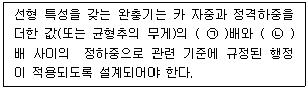
- ㉠ 2.0, ㉡ 4
- ㉠ 2.0, ㉡ 5
- ㉠ 2.5, ㉡ 4
- ㉠ 2.5, ㉡ 5
(정답률: 61%)
28. 유압 엘리베이터에서 로프 또는 체인이 동기화 수단으로 사용될 경우의 기준에 대한 설명으로 틀린 것은?
- 체인의 안전율은 8 이상이어야 한다.
- 로프의 안전율은 12 이상이어야 한다.
- 2개 이상의 독립된 로프 또는 체인이 있어야 한다.
- 최대 힘은 전 부하 압력에서 발생하는 힘, 로프 또는 체인의 수를 고려하여 계산되어야 한다.
(정답률: 56%)
29. 지진대책에 따른 엘리베이터의 구조에 대한 설명으로 틀린 것은?
- 지진이나 기타 진동에 의해 주로프가 도르래에서 이탈하지 않아야 한다.
- 엘리베이터의 균형추가 지진이나 기타 진동에 의하여 가이드 레일로부터 이탈하지 않아야 한다.
- 승강로내에는 지진 시에 로프, 전선 등의 기능에 악영향이 발생하지 않도록 모든 돌출물을 설치하여서는 안 된다.
- 엘리베이터의 전동기, 제어반 및 권상기는 카마다 설치하고, 또한 지진이나 기타 진동에 의해 전도 또는 이동하지 않아야 한다.
(정답률: 68%)
30. 사이리스터의 점호각을 바꿈으로써 승강기 속도를 제어하는 시스템은?(문제 오류로 가답안 발표시 3번으로 발표되었지만 확정답안 발표시 1, 3번이 정답처리 되었습니다. 여기서는 가답안인 3번을 누르시면 정답 처리 됩니다.)
- 교류 귀환 제어방식
- 워드 레오나드 방식
- 정지 레오나드 방식
- 교류 2단 속도 제어방식
(정답률: 68%)
31. 엘리베어터의 일주시간을 계산할 때 고려사항이 아닌 것은?
- 주행시간
- 도어개폐시간
- 승객출입시간
- 기준층 복귀시간
(정답률: 65%)
32. 다음 그림과 같은 도르래에 매달려 있는 하중 W를 올리는 힘 P로 나타낸 것은?
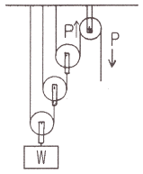
- W = 2P
- W = 3P
- W = 4P
- W = 8P
(정답률: 60%)
33. 다음 중 추락방지안전장치(비상정지장치)의 성능 시험과 관계가 가장 적은 사항은?
- 적용중량
- 작동속도
- 평균감속도
- 주행안내(가이드) 레일의 규격
(정답률: 67%)
34. 기어감속비 49:2, 도르래 지름 540mm, 전동기입력 주파수 60Hz, 극수 4, 전동기의 회전 수 슬립이 4% 일 때 엘리베이터의 정격속도는 약 몇 m/min 인가?
- 90
- 1⑤
- 120
- 150
(정답률: 48%)
35. 엘리베이터 승강로 점검문의 크기 기준은?
- 높이 0.6m 이하, 폭 0.6m 이하
- 높이 0.6m 이하, 폭 0.5m 이하
- 높이 0.5m 이하, 폭 0.6m 이하
- 높이 0.5m 이하, 폭 0.5m 이하
(정답률: 47%)
36. 추락방지안전장치(비상정지장치)가 없는 균형추 또는 평형추의 T형 주행안내 레일에 대해 계산된 최대 허용 휨은?
- 한방향으로 3mm
- 양방향으로 5mm
- 한방향으로 10mm
- 양방향으로 10mm
(정답률: 61%)
37. 교통수요 산출을 위해 이용자 인원을 산정할 때 하향방향승객을 고려하지 않는 경우는?
- 병원
- 아파트
- 사무실
- 백화점
(정답률: 64%)
38. 정격속도 60m/min, 정격하중 1150kgf, 오버밸런스율 45%, 전체효율이 0.6인 승강기용 전동기의 용량은 약 몇 kW 인가?
- 5.5
- 7.5
- 10.3
- 13.3
(정답률: 53%)
39. 수직 개폐식 문의 현수에 대한 기준으로 틀린 것은?
- 현수 로프·체인 및 벨트의 안전율은 8 이상으로 설계되어야 한다.
- 현수 로프 풀리의 피치 직경은 로프 직경의 35배 이상이어야 한다.
- 수직 개폐식 승강장문 및 카문의 문짝은 2개의 독립된 현수 부품에 의해 고정되어야 한다.
- 현수 로프/체인은 풀리 홈 또는 스프로킷에서 이탈되지 않도록 보호되어야 한다.
(정답률: 58%)
40. 엘리베이터 브레이크의 능력에 대한 설명으로 틀린 것은?(오류 신고가 접수된 문제입니다. 반드시 정답과 해설을 확인하시기 바랍니다.)
- 제동력을 너무 작게 하면 제동 시 회전부분에 큰 응력을 발생시킨다.
- 브레이크는 카나 균형추 등 엘리베이터의 전 장치의 관성을 제지할 필요가 없다.
- 정지 후 부하에 의한 언밸런스로 역구동되어 움직이는 일이 없도록 유지되어야 한다.
- 화물용 엘리베이터는 정격의 120% 부하로 전속 하강 중 위험 없이 감속·정지할 수 있어야 한다.
(정답률: 35%)
3과목: 일반기계공학
41. 측정하고자 하는 축을 V블록 위에 올려놓은 뒤 다이얼 게이지를 설치하고 회전하였더니 눈금 값이 1mm라면 이 축의 진원도(mm)는?
- 2
- 1
- 0.5
- 0.25
(정답률: 50%)
42. 주축의 회전운동을 직선 왕복운동으로 바꾸는데 사용하는 밀링 머신의 부속장치는?
- 분할대
- 슬로팅 장치
- 래크 절삭 장치
- 로터리 밀링 헤드 장치
(정답률: 49%)
43. 지름 2.5cm 의 연강봉 양단을 강성벽에 고정한 후 30℃에서 0℃까지 냉각되었을 경우 연강봉에 생기는 압축응력(kPa)은? (단, 연강의 선팽창계수는 0.000012, 세로탄성계수는 210 MPa 이다.)
- 37.1
- 75.6
- 371
- 756
(정답률: 42%)
44. 정밀주조법 중 셀 몰드법의 특징이 아닌 것은?
- 치수 정밀도가 높다.
- 합성수지의 가격이 저가이다.
- 제작이 용이하며 대량생산에 적합하다.
- 모래가 적게 들고 주물의 뒤처리가 간단하다.
(정답률: 48%)
45. KS규격에 의한 구름 베어링의 호칭번호 6200ZZ에서 “ZZ”의 의미로 옳은 것은?
- 한쪽 실붙이
- 링 홈붙이
- 양쪽 실드붙이
- 멈춤 링붙이
(정답률: 65%)
46. 일반적인 구리의 특성으로 틀린 것은?
- 전기 및 열의 전도성이 우수하다.
- 아름다운 광택과 귀금속적 성질이 우수하다.
- Zn, Sn, Ni, Ag 등과 쉽게 합금을 만들 수 있다.
- 기계적 강도가 높아 공작기계의 주축으로 사용된다.
(정답률: 62%)
47. 유량이나 입구 측의 유압과는 관계없이 미리 설정한 2차측 압력을 일정하게 유지하는 것은?
- 체크 밸브
- 리듀싱 밸브
- 시퀀스 밸브
- 릴리프 밸브
(정답률: 43%)
48. 일반적인 유량측정 기기에 해당하는 것은?
- 피토 정압관
- 피토관
- 시차 액주계
- 벤투리미터
(정답률: 56%)
49. 송출량이 많고 저양정인 경우 적합하며 회전차의 날개가 선박의 스크루 프로펠러와 유사한 형상의 펌프는?
- 터빈 펌프
- 기어 펌프
- 축류 펌프
- 왕복 펌프
(정답률: 48%)
50. 그림과 같은 블록 브레이크에서 드럼 축의 레버를 누르는 힘(F)을 우회전할 때는 F1, 좌회전할 때는 F2라고 하면 F1/F2의 값은? (단, 중작용선이며 모두 동일한 제동력을 발생시키는 것으로 가정한다.)
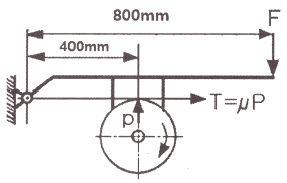
- 0.25
- 0.5
- 1
- 4
(정답률: 41%)
51. 그림과 같은 외팔보의 끝단에 집중하중 P가 작용할 때 최소 처짐이 발생하는 단면은? (단, 보의 길이와 재질은 같다.)
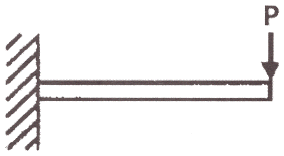
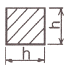
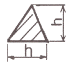
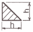
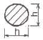
(정답률: 55%)
52. 비틀림 모멘트를 받아 전단응력이 발생되는 원형 단면 축에 대한 설명으로 틀린 것은?
- 전단응력은 지름의 세제곱에 반비례한다..
- 전단응력은 비틀림 모멘트와 반비례한다.
- 전단응력은 구할 때 극단면계수도 이용한다.
- 중실 원형축의 지름을 2배로 증가시키면 비틀림 모멘트는 8배가 된다.
(정답률: 46%)
53. 용접 이음의 장점이 아닌 것은?
- 자재가 절약된다.
- 공정수가 증가된다.
- 이음효율이 향상된다.
- 기밀 유지성능이 좋다.
(정답률: 61%)
54. 프레스 가공이나 주조 가공 등으로 생산된 제품의 불필요한 테두리나 핀 등을 잘라내거나 따내어 제품을 깨끗이 정형하는 작업은?
- 펀칭
- 블랭킹
- 세이빙
- 트리밍
(정답률: 55%)
55. 지름 20mm, 인장강도 42MPa 의 둥근 봉이 지탱할 수 있는 허용범위 내 최대하중(N)은 약 얼마인가? (단, 안전율은 7 이다.)
- 1884
- 2235
- 3524
- 4845
(정답률: 32%)
56. 주로 나무나 가죽, 베크라이트 등 비금속이나 연한 금속의 거친 가공에 가장 적합한 줄(file)은?
- 귀목(rasp cut)
- 단목(single cut)
- 복목(double cut)
- 파목(curved cut)
(정답률: 54%)
57. 키(key)의 설계에서 강도상 주로 고려해야 하는 것은?
- 키의 굽힘응력과 전단응력
- 키의 전단응력과 인장응력
- 키의 인장응력과 압축응력
- 키의 전단응력과 압축응력
(정답률: 45%)
58. 평벨트 전동장치와 비교한 V-벨트 전동장치의 특징으로 옳은 것은?
- 두 축의 회전방향이 다른 경우에 적합하다.
- 평벨트 전동에 비해 전동 효율이 나쁘다.
- 축간거리가 짧고 큰 속도비에 적합하다.
- 5m/s 이하의 저속으로만 운전이 가능하다.
(정답률: 52%)
59. 구상 흑연 주철에 관한 설명으로 틀린 것은?
- 단조가 가능한 주철이다.
- 차량용 부품이나 내마모용으로 사용한다.
- 노듈러 또는 덕타일 주철이라고도 한다.
- 인장강도가 50~70 kgf/mm2 정도인 것도 있다.
(정답률: 46%)
60. 동력 전달용 나사가 아닌 것은?
- 관용 나사
- 사각 나사
- 둥근 나사
- 톱니 나사
(정답률: 57%)
4과목: 전기제어공학
61. 코일에 단상 200V의 전압을 가하면 10A의 전류가 흐르고 1.6kW의 전력을 소비된다. 이 코일과 병렬로 콘덴서를 접속하여 회로의 합성역률을 100%로 하기 위한 용량 리액턴스(Ω)는 약 얼마인가?
- 11.1
- 22.2
- 33.3
- 44.4
(정답률: 33%)
62. 영구자석의 재료로 요구되는 사항은?
- 잔류자기 및 보자력이 큰 것
- 잔류자기가 크고 보자력이 작은 것
- 잔류자기는 작고 보자력이 큰 것
- 잔류자기 및 보자력이 작은 것
(정답률: 51%)
63. 시퀀스 제어에 관한 설명으로 틀린 것은?
- 조합논리회로가 사용된다.
- 시간지연요소가 사용된다.
- 제어용 계전기가 사용된다.
- 폐회로 제어계로 사용된다.
(정답률: 50%)
64. 피드백 제어에 관한 설명으로 틀린 것은?
- 정확성이 증가한다.
- 대역폭이 증가한다.
- 입력과 출력의 비를 나타내는 전체이득이 증가한다.
- 개루프 제어에 비해 구조가 비교적 복잡하고 설치비가 많이 든다.
(정답률: 48%)
65. 다음 중 전류계에 대한 설명으로 틀린 것은?
- 전류계의 내부저항이 전압계의 내부저항보다 작다.
- 전류계를 회로에 병렬접속하면 계기가 손상될 수 있다.
- 직류용 계기에는 (+), (-)의 단자가 구별되어 있다.
- 전류계의 측정 범위를 확장하기 위해 직렬로 접속한 저항을 분류기라고 한다.
(정답률: 42%)
66. 100V에서 500W를 소비하는 저항이 있다. 이 저항에 100V의 전원을 200V로 바꾸어 접속하면 소비되는 전력(W)은?
- 250
- 500
- 1000
- 2000
(정답률: 42%)
67. 전압을 V, 전류를 I, 저항을 R, 그리고 도체의 비저항을 ρ라 할 때 옴의 법칙을 나타낸 식은?
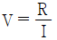
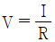
- V = IR
- V = IRρ
(정답률: 63%)
68. 절연의 종류를 최고 허용온도가 낮을 것부터 높은 순서로 나열한 것은?
- A종 ＜ Y종 ＜ E종 ＜ B종
- Y종 ＜ A종 ＜ E종 ＜ B종
- E종 ＜ Y종 ＜ B종 ＜ A종
- B종 ＜ A종 ＜ E종 ＜ Y종
(정답률: 56%)
69. 어떤 코일에 흐르는 전류가 0.01초 사이에 20A에서 10A로 변할 때 20V의 기전력이 발생한다고 하면 자기 인덕턴스(mH)는?
- 10
- 20
- 30
- 50
(정답률: 39%)
70. 아래 접점회로의 논리식으로 옳은 것은?
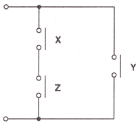
- X · Y · Z
- (X + Y) · Z
- (X · Z) + Y
- X + Y + Z
(정답률: 61%)
71. 평형 3상 전원에서 각 상간 전압의 위상차(rad)는?
- π/2
- π/3
- π/6
- 2π/3
(정답률: 53%)
72. 두 대 이상의 변압기를 병렬 운전하고자 할 때 이상적인 조건으로 틀린 것은?
- 각 변압기의 극성이 같을 것
- 각 변압기의 손실비가 같을 것
- 정격용량에 비례해서 전류를 분담할 것
- 변압기 상호간 순환전류가 흐르지 않을 것
(정답률: 39%)
73. 다음 회로도를 보고 진리표를 채우고자 한다. 빈칸에 알맞은 값은?
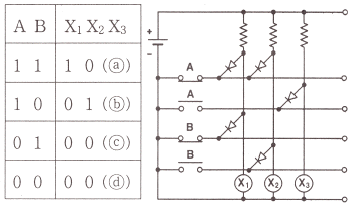
- ⓐ 1, ⓑ 1, ⓒ 0, ⓓ 0
- ⓐ 0, ⓑ 0, ⓒ 1, ⓓ 1
- ⓐ 0, ⓑ 1, ⓒ 0, ⓓ 1
- ⓐ 1, ⓑ 0, ⓒ 1, ⓓ 0
(정답률: 42%)
74. 다음 회로에서 E=100V, R=4Ω, XL=5Ω, XC=2Ω 일 때 이 회로에 흐르는 전류(A)는?
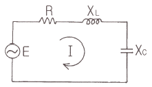
- 10
- 15
- 20
- 25
(정답률: 38%)
75. 다음 블록선도의 전달함수 C(s)/R(s)는?
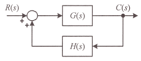
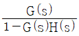
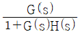
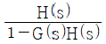
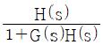
(정답률: 50%)
76. 다음의 신호흐름선도에서 전달함수 C(s)/R(s)는?
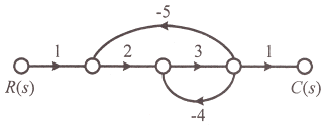
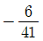
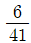
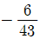
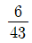
(정답률: 45%)
77. 전동기를 전원에 접속한 상태에서 중력부하를 하강시킬 때 속도가 빨라지는 경우 전동기의 유기기전력이 전원전압보다 높아져서 발전기로 동작하고 발생전력을 전원으로 되돌려 줌과 동시에 속도를 감속하는 제동법은?
- 회생제동
- 역전제동
- 발전제동
- 유도제동
(정답률: 56%)
78. 전기기기 및 전로의 누전여부를 알아보기 위해 사용되는 계측기는?
- 메거
- 전압계
- 전류계
- 검전기
(정답률: 53%)
79. 입력에 대한 출력의 오차가 발생하는 제어시스템에서 오차가 변화하는 속도에 비례하여 조작량을 가변하는 제어방식은?
- 미분 제어
- 정치 제어
- on-off 제어
- 시퀀스 제어
(정답률: 54%)
80. 기계적 제어의 요소로서 변위를 공기압으로 변환하는 요소는?
- 벨로즈
- 트랜지스터
- 다이아프램
- 노즐 플래퍼
(정답률: 48%)